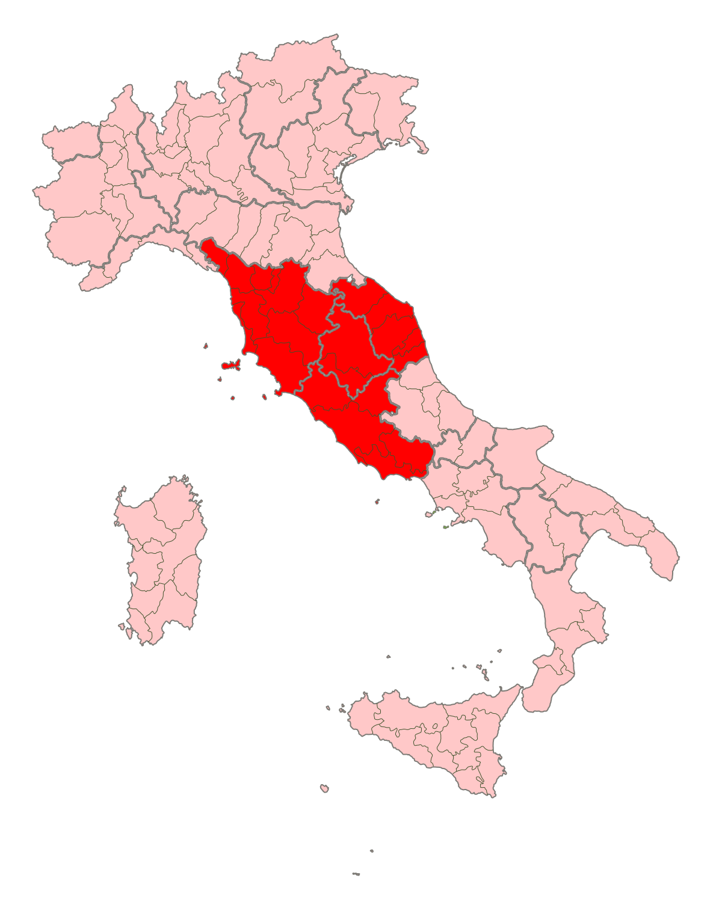

De traditionele Italiaanse ovenschotel stamt uit Midden-Italië
De ovenschotel wordt gemaakt met voorgekookte, halfgare plakken pasta, gehakt, Parmezaanse kaas en bechamelsaus. Er bestaan diverse varianten, onder andere met spinazie.
Ook buiten Italië wordt lasagne veelvuldig aan de lokale smaak aangepast. Zo wordt lasagne binnen de Ierse keuken bereid met tomaten, cheddarkaas en een grote hoeveelheid gehakt, en wordt het geserveerd met friet.
In kant-en-klaar lasagne is een deel van de kaas vaak vervangen door de goedkopere analoogkaas.
Verwarm de oven voor op 180 ºC. Snijd de ui en knoflook fijn. Bak het gehakt in een antiaanbakpan. Voeg de ui en knoflook toe en bak 5 min. mee. Voeg de tomaten toe, maak ze fijn en roer alles goed door. Breng op smaak met peper en zout.
Verwarm de margarine in een pan en strooi de bloem erbij. Voeg daarna scheut voor scheut de melk toe en blijf roeren zodat er een saus ontstaat.
Vet de ovenschaal in. Giet een kleine laag saus in de ovenschaal. Leg daarop afwisselend de lasagnebladen, gehaktmengsel en saus. Herhaal dit tot alles bijna op is. Eindig met een laag saus. Strooi de kaas erover en bak de lasagne in de oven in ca. 35 min. gaar.